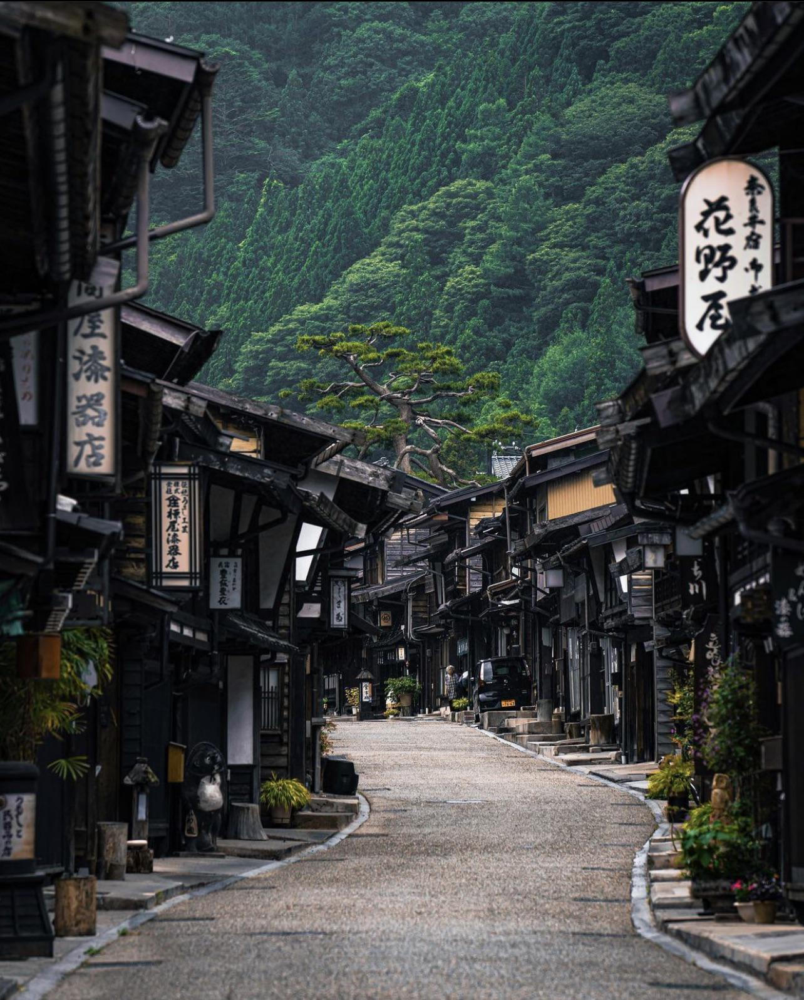
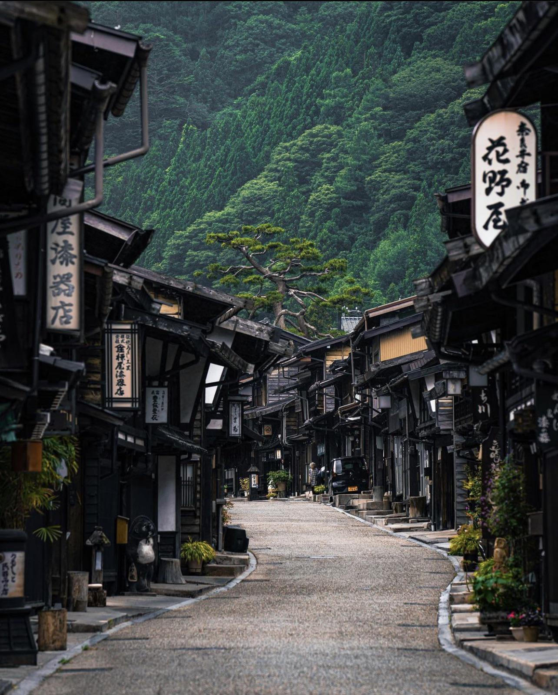

Countries you should travel to
 

United Kingdom
If you are a history buff then you will definitely want to think about visiting the United Kingdom. This part of the world has a lot to offer when it comes to fascinating history. There are lots of unique historic buildings that you can visit. Those include Abbotsbury Abbey, Alfred’s Tower, Amberley Castle, Antony House, and many more.
Japan
Japan is the most amazing tourist destination and it offers many unique experiences that you cannot find in any other part of the world. The culture of this country is an interesting blend of Eastern traditions and Western modernity that can be seen everywhere. Japan is one of the oldest civilizations and has a beautiful and diverse history. The stunning, diverse scenery with mountains and breathtaking views, which are much appreciated by the Japanese, offers so many different experiences that attract tourists from all corners of the world.